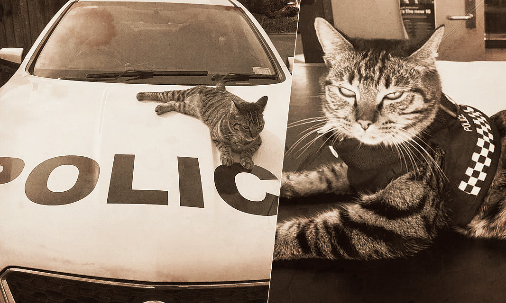

В Германии полицейские перекрыли участок автобана ради спасения котенка

Спасённая кошка и её спаситель
На Западе Германии в минувшую субботу состоялась
необычная операция по спасению котенка, который по
непонятной причине оказался на разделительной
полосе автомагистрали.
Полиции пришлось почти на час перекрыть автобан А52 на
отрезке между городами Кеттвиг и Минтард, чтобы извлечь
перепуганное животное, которое вцепилось в
отбойник на разделительной полосе.
О котенке в службу спасения животных сообщила
автомобилистка, которая проезжала по
автомагистрали в направлении Эссена около 16:30.
В свою очередь в службе спасения передали информацию в
дорожную полицию, которая перекрыла трассу
в обоих направлениях.
Полицейским удалось поймать животное, которое было явно
напугано. Однако на всю операцию стражам порядка
потребовался почти час, из-за чего на трассе скопилась
пробка длиной 6 километров. В результате проведения
акции никто не пострадал.
В Новой Зеландии кошка стала работать в полиции
Прошло всего пару месяцев с тех пор, как легендарный
констебль Эллиот (морская свинка) покинул этот мир.
На его место взяли кошку по кличке Тиа, которая стала
достойной заменой и прекрасной работницей.
Кошка лежит на полицейской машине
Несмотря на то что сон — наиболее приятное для кошечки
занятие, она достойно исполняет свои обязанности,
отметили в пресс-службе полиции.
«Тиа помогала нашим сотрудникам проводить
некоторые расследования. Она очень хорошо
разбирается в администрировании и документах», —
говорят стражи порядка.
Тиа работает только по 30 минут, а в остальное время спит,
умиляя сотрудников полиции и помогая им заполнить
пустоту, оставшуюся после гибели констебля
Эллиота, сообщает NZ Herald.
Кошка Диджа попала в Книгу рекордов Гиннесса 1985
Полицейским удалось поймать животное, которое было
явно напугано. Однако на всю операцию стражам порядка
потребовался почти час, из-за чего на трассе скопилась пробка
длиной 6 километров. В результате проведения акции
никто не пострадал.
В отличие от собак, кошки неохотно поддаются
дрессировке; тем удивительнее выглядят достижения
кошки по кличке Диджа, живущей в Австралии. Владелец научил ее
двум десяткам трюков, при этом выполнять их она может рекордно быстро.
Мировой рекорд в этой категории был поставлен в прошлом
году, а недавно на YouTube-канале Книги рекордов был выпущен
ролик о необычном животном. Диджа послушно отзывается
на все указания — встает, ложится, поворачивается,
прыгает и даже катается на скейтборде.
В новое издание Guinness World Records 1985 вошли и другие
удивительные звери — например, среди собак
рекордсменом по количеству трюков в минуту
(32) стал парсон-рассел терьер Смурф.